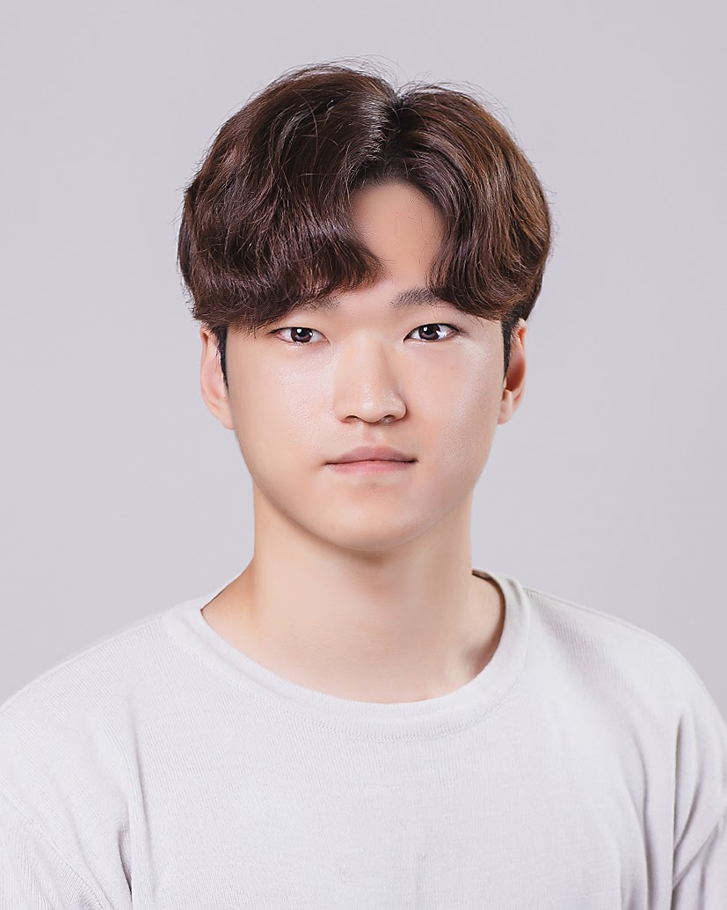
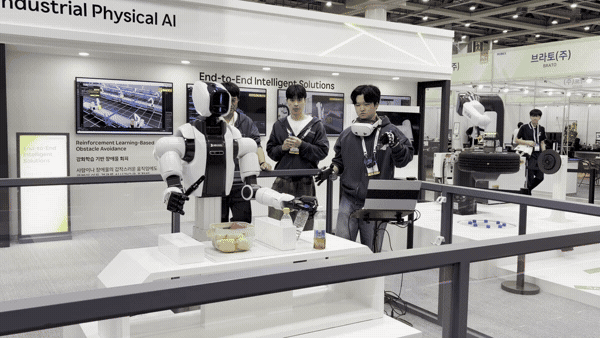
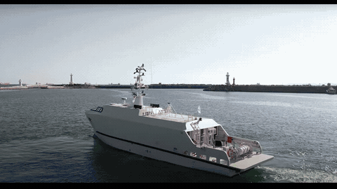
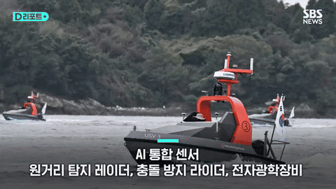
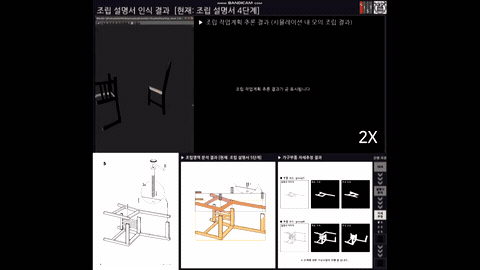

Seongju Lee
Senior Researcher, HD Hyundai Robotics
Full CV · Selected CV · Email · Google Scholar · GitHub
I am a Senior Researcher at HD Hyundai Robotics, working on humanoid and dual-arm robot learning and multimodal data pipelines.
My research spans object detection, semantic segmentation, domain generalization, and multi-agent trajectory prediction. I have experience leading perception software development and building multi-view datasets for autonomous systems.
I received my Ph.D. in AI Convergence from Gwangju Institute of Science and Technology (GIST) in February 2026, advised by Prof. Kyoobin Lee.
Research interests: Robust visual perception; Domain generalization and knowledge distillation; Multi-agent trajectory prediction; Multimodal robot learning.

Selected publications
All publications →-
-

-
-
Robust Maritime Object Detection under Adverse Conditions via Joint Semantic Learning without Extra Computational Overhead
The 2025 IEEE/RSJ International Conference on Intelligent Robots and Systems (IROS 2025)
-
-

-
Human-efficient annotation system via active semi-supervised learning and selective review
Intelligent Systems with Applications, Vol. 31, Article 200701, 2026
Additional First-/Co-first-Author Publications
-
-
Robust Skin Disease Classification by Distilling Deep Neural Network Ensemble for the Mobile Diagnosis of Herpes Zoster
IEEE Access, 2021
-
* Equal contribution.
In submission
-

Rethinking Deformable Convolution as an Adapter with Cross-layer Weight Sharing for Robust Semantic Segmentation in the Wild
In Submission. Target Journal: IEEE Robotics and Automation Letters
First Prize in the USV-based Obstacle Segmentation Challenge at the 3rd Maritime Computer Vision Workshop
Vision Foundation Models (VFMs), Domain Generalized Semantic Segmentation (DGSS), Deformable Convolution Networks (DCNs), Parameter-Efficient Fine-Tuning (PEFT)
Selected projects
All projects →-

Jul. 2026 – Present
Development of an Intelligent Dual-Arm Robot
HD Hyundai Robotics
AI & Software Developer
Robot learning with VLA/WAM models; VR/glove teleoperation and hand retargeting; simulation and multimodal demonstration data pipelines.
Company demonstration at FIX 2026. Video: HD Hyundai Robotics, via NEWSIS. · Video source
-
Sep. 2023 – Feb. 2026
Development of a Micro Intelligent Drone for Autonomous Missions in Communication/GPS-denied Environments
Institute of Civil-Military Technology Cooperation (ICMTC), South Korea
Project Member · Software Developer
RGB-IR object detection and a multimodal RGB, IR, and LiDAR database captured from drone views.
-

Apr. 2023 – Dec. 2024
Development of a Situational Awareness System for Preventing Collisions and Accidents of Autonomous Ships
Ministry of Trade, Industry and Energy (MOTIE), South Korea
Project Member · Software Dev. Leader
Multi-camera maritime object detection and tracking, training dataset creation, and integration into autonomous ship systems.
Platform photo and perception footage: research presentation.
-

Apr. 2020 – Nov. 2024
Development of Swarm USV Autonomous Navigation Algorithm
Agency for Defense Development (ADD), South Korea
Project Leader · AI & Software Dev. Leader
Maritime object detection and intention prediction for swarm situational awareness, integrated into multiple USVs.
Platform footage: SBS News (Oct. 10, 2024). Perception footage: research presentation. · Video source
-
Mar. 2022 – Dec. 2022
Ceiling Layout Estimation for Indoor Environments
LG, South Korea
Project Member · AI & Software Dev. Leader
Ceiling segmentation and dataset construction for robust floor plan generation under occlusion.
-

Apr. 2019 – Mar. 2020
Robotic IKEA Furniture Assembly from Assembly Manuals
Ministry of Science and ICT (MSIT), South Korea
Project Member · AI & Software Developer
Assembly-part instance segmentation and workflow visualization for robot assembly from IKEA manuals.


Professional experience
All experience →-
Jul. 2026 – Present
Senior Researcher
HD Hyundai Robotics
Developing intelligent dual-arm robotic systems, multimodal data pipelines, and ROS 2 interfaces.
-
Mar. 2026 – Jun. 2026
Postdoctoral Researcher
GIST Institute of Artificial Intelligence
Education
-
Mar. 2020 – Feb. 2026
Ph.D. in AI Convergence
Gwangju Institute of Science and Technology (GIST)
Dissertation Title: Robust Perception and Trajectory Forecasting for Autonomous Navigation in the Wild Advisor: Prof. Kyoobin Lee
-
Mar. 2018 – Feb. 2020
M.S., School of Integrated Technology (Intelligent Robotics Program)
Gwangju Institute of Science and Technology (GIST)
Advisor: Prof. Kyoobin Lee
-
Mar. 2014 – Feb. 2018
B.S. in Mechanical Engineering
Gwangju Institute of Science and Technology (GIST)
UC Berkeley Summer Session (Jul. 2015 – Aug. 2015): Linear Algebra and Differential Equations, Social Inequalities Advisor: Prof. Kwanheng Lee
Selected awards
All awards →-
Jun. 2026
Multimodal Semantic Segmentation Challenge, 4th Workshop on Maritime Computer Vision (MaCVi)
First Place
IEEE/CVF Conference on Computer Vision and Pattern Recognition (CVPR 2026)
-
Jan. 2026
RoCo Challenge @ AAAI 2026: Robotic Collaborative Assembling for Human-Centered Manufacturing
Finalist Excellence Award
AAAI, A*STAR, NTU
-
Nov. 2025
Autonomous Driving AI Challenge (Semantic Segmentation)
Second Prize (IITP President's Award)
MSIT, IITP, KADIF
-
Dec. 2024
USV-based Obstacle Segmentation Challenge, 3rd Maritime Computer Vision Workshop
First Prize
IEEE/CVF Winter Conference on Applications of Computer Vision (WACV 2025)
-
Dec. 2024
USV-based Panoptic Segmentation Challenge, 3rd Maritime Computer Vision Workshop
Second Prize
IEEE/CVF Winter Conference on Applications of Computer Vision (WACV 2025)
-
Sep. 2022
The first NIA-GIST AI-HUB AI Competition
First Prize
NIA, GIST